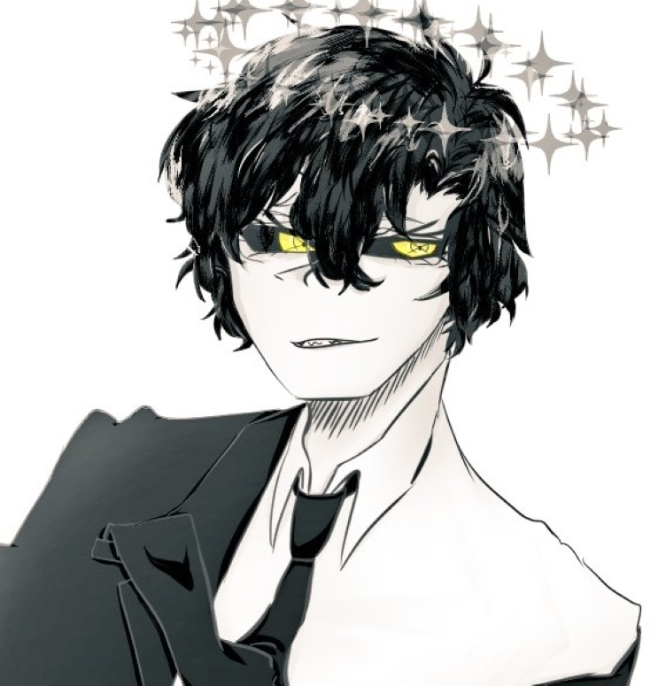

| 이리 - |
|
|  | |
| 별칭 | 강 이리, 12 |
| 나이 | (외관 상) 32세 |
| 종족 | ? |
| Sex / Gender | 양성구유 (인간형일때에는 여성체) |
| 직업 | 공작원 |
| 키 | 172cm |
| 몸무게 | 64kg |
| 혈액형 | B형 |
| 생일 | 1월 2일 |
FNI
1. 외형
새까만 머리카락은 매일 정리한 것처럼 윤기흐르며 곱슬거린다. 대충 다듬어진 뒷머리가 목 뒤를 덥수룩하게 덮을 정도인 숏컷. 왼쪽 눈 윗
지점에서 가름마를 타서 왁스로 띄운 앞머리는 속눈썹에 살짝 닿아온다. 귀 근처의 옆머리는 자기주장하듯 이상한 방향으로 삐져나와있다.
창백할 정도로 새하얀 피부라, 얼굴을 바라보면 무생물을 보는 것 마냥 묘한 이질감이 든다. 언제나 비웃는 듯한 눈꼬리는 위로 바짝 올라가
있으며, 황금색 눈동자가 꿰뚫어보듯 떨림 없이 응시하고 있다. 동공은 묘하게 여러겹이 겹쳐보여, 원근감을 준다는 착시마저 이끌어낸다. 속눈썹은
화장 유무를 가리기 힘들 정도로 길게 위로 휘어있다. 입 역시 항상 호선을 그리며 비웃는 듯한 웃음기가 서려있다. 여러모로 불량한, 그리고 불안한
인상을 준다.
온 몸에 걸친 것은 딱 맞는 사이즈의 흰 드레스셔츠와 검은 슈트 재킷과 정장 구두. 셔츠는 윗단부터 버튼이 두 개나 풀어져
아슬아슬해보인다. 특히나 가슴 부위가 큰 편이라 지나칠 정도로 셔츠가 팽팽해져있다. 가끔 격식을 차려야 할 때에는 검은 넥타이를 매지만,
끝 부분이 어깨 너머로 넘어가있거나 재킷 윗 주머니에 가지런히 넣어져 있는 등, 자유분방한 패션을 보여준다. 사석에서도 항상 슈트 내지 세미 정장
스타일을 고수하며, 사복을 입는 모습을 찾아보기 힘들다.
여성의 신체 치고는 상당히 두꺼운 뼈대와 근근히 들어찬 잔근육 덕에 튼튼해보이고 밸런스 있는 체형이다. 손가락이 상당히 미형으로
탄탄하면서도 길게 뻗어있으며, 손등과 손목에는 힘줄이 유난히 도드라져 보인다.
본체는 눈으로 가득 들어찬 검은 고래와 닮은 형태이다.
2. 성격
[ 무심한 ]
근본적으로, 타인에게 관심이 없다. 오직 그가 마음에 두고 좇고있는 상대가 아니라면 웬만해서는 눈길조차 주지
않는다. 그렇기에 일상에서는 대화도 대응도 건성건성. 깊게 생각하지 않고 대충 상황만 받아치다보니, 생각 없이 한 말이 남을 상처입히는 일도 잦다.
물론 그는 전혀 신경쓰지 않는다.
" 나 뿐만이 아니라, 원래 사람들은 서로에게 관심 없어. "
[ 눈치 빠른 ]
그럼에도 불구하고 눈치 빠른 모습은, 그가 정말 주변에게 일체 관심을 주지 않는 건 아니라는 것을 보여준다.
다른 사람의 세세한 언행을 관찰하여 지금 무슨 생각에 빠져있는지, 무엇을 숨기고 있는지 알아내는 능력이 탁월하다. 거기에서 비롯된 화술 또한
상당한데, 그 능력을 남의 기분을 망치는 데에만 사용한다는 것이 결점.
" 불쌍한 아이로구나. "
[ 남을 얕잡아보는 ]
모든 것들을 깔보고 하대하는 시선이 기저에 깔려있다. 조금만 깊은 대화를 시도해봐도 번번이 기분만
나빠지고 포기하게 만드는 정도의 언행은 놀라울 정도이다. 가끔은 논쟁 중에 정도가 심한 욕설도 아무렇지 않게 내뱉어 경악을 불러일으키는 경우도 있다. 반대로
어리거나 악의가 전혀 없는 상대가 말을 걸어오면 아예 대화를 이어나가지도 않고 무시하기도 한다. 대화할 가치도 없다는 표현일지도 모르지만,
나름대로의 배려일지도.
" 네가 뭐라도 될 수 있을 것 같냐? 멍청하기는. "
3-1. 호불호
뱀이나 도마뱀과 같은 파충류를 좋아한다. 특히나 몸이 길쭉하고 단단한 비늘이 있다면 더더욱 좋아한다. 사람을 포함한 대부분의 동물에게
별 관심을 보이지 않지만, 파충류만은 예외다. 뱀 형태의 인형을 구매하거나 희귀 도마뱀의 사진을 보는 등, 의외의 모습을 보여주기까지 한다.
물을 굉장히 싫어한다. 물이 몸에 끼얹어지거나 튀는 상황을 피하려들며, 물에 접촉할 시 서슴없이 불쾌함을 표현하다. 바다나 계곡
등으로 놀러가 몸을 담구는 사람들의 문화를 이해하지 못 한다. 심지어 물을 마시는 모습 조차도 보여주지 않아, 최소한의 수분 섭취는 하고 있는건지
곤혹스럽게 만든다.
3-2. 취미
취미는 여기저기 배회하며 걸어다니기. 산책이라고 이름 붙이기도 민망할 정도로, 주변에 관심주는 일 없이 정해진 선로를 달리듯 걸어다닌다. 보통은 거주 중인 지역의 인적 드문 뒷골목이나 공원 산책로를 걷는다. 무얼 하고 있느냐고 질문이 던져지면 '순찰 돌고 있다'는 말로 넘겨버린다. 30분 정도의 시간이 주어지면 보통 매일 돌던 주변을 걷지만, 서너 시간 정도로 여가시간이 주어지면 몇 블럭 이상 떨어진 곳 까지 배회하다 돌아오기도 한다.
3-3. 직업
자신의 입으로 밝힌 직업은 국가 공작원이다. 재단과 연이 있는 국가기관에서 합의가 오간 듯 보이지만 딱히 무언가를 돕고 있지는 않다. 단지
지금 쫓고 있는 상대를 찾기 위해 일시적으로 협력하고 있는 듯.
위장 직업으로는 한 소도시 경찰서의 강력반 형사이다. 동료들과의 사이는 데면데면... 오히려 안 좋은 편이지만, 일은 군말없이
주어진 일만 적당히 하고 있다. 전근 나가는 시간이 많아서 존재감도 없는 편. 추적하고 뻗치는 것을 잘 하기 때문에 의외로 직업만족도는 높다.
4. 기타
빠르게 산책하거나 뛸 때가 아닌, 천천히 걸을 때 걸음걸이가 굉장히 건들거린다. 비틀비틀 걷는 것 같으면서도, 아주 느리게 스텝을 밞는 것
같으면서도 앞으로 향하는 걸음걸이는 때로는 매혹적이고 때로는 짜증나게 만든다.
흡연자다. 그렇지만 데이와 연애를 시작하고 난 뒤에는 신경이 쓰이는지 웬만해서는 피우지 않고 있다.
 데이 - 유일무이하게 관심 갖는 사람. 어쩌다보니 사귀게 되었다...
데이 - 유일무이하게 관심 갖는 사람. 어쩌다보니 사귀게 되었다...
 오세나 - 지금 쫓고 있는 상대.
오세나 - 지금 쫓고 있는 상대.